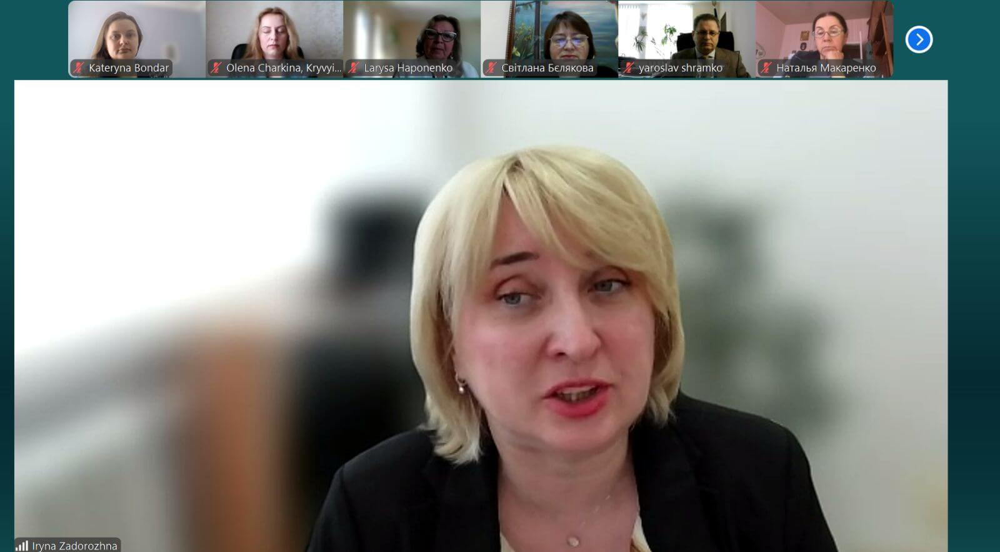

Promoting the Mental Health of Psychological Service Providers During Wartime: All-Ukrainian Scientific-Practical Conference with International Participation (April 25, 2025)
We are honored to spotlight the contribution of Dr. Iryna Zadorozhna, Vice-Rector for Research and International Cooperation of Ternopil Volodymyr Hnatiuk National Pedagogical University, Doctor of Pedagogical Sciences, Professor, and coordinator of the Erasmus+ project "Boosting University Psychological Resilience and Wellbeing in (Post-) War Ukrainian Nation" (101129379-BURN-ERASMUS-EDU-2023-CBHE).

This landmark conference united experts and practitioners to address the urgent need for sustainable psychological support structures in wartime conditions.
Key thematic areas included:
- Mental health of psychological service providers in wartime: challenges, issues, and evaluation criteria
- Prevention of professional burnout and compassion fatigue
- Psychological support for socially vulnerable populations under martial law
- Fostering value-based attitudes toward mental health during war
- Countering manipulative influences and psychological information warfare
- Supervision and intervision as tools for mental health promotion among providers
- Psychohygiene and psychoeducation in work with targeted professional groups
This event reflects our shared commitment to mental health resilience – for those who support others every day, even amidst war.